case study / brand identity
A distinctive identity for open-source ML
Built KitOps' visual identity from the ground up, from logo and visual system to illustrations, themes, and the "Kernel Krunch" mascot, giving a technical developer product a recognizable and strong personality.
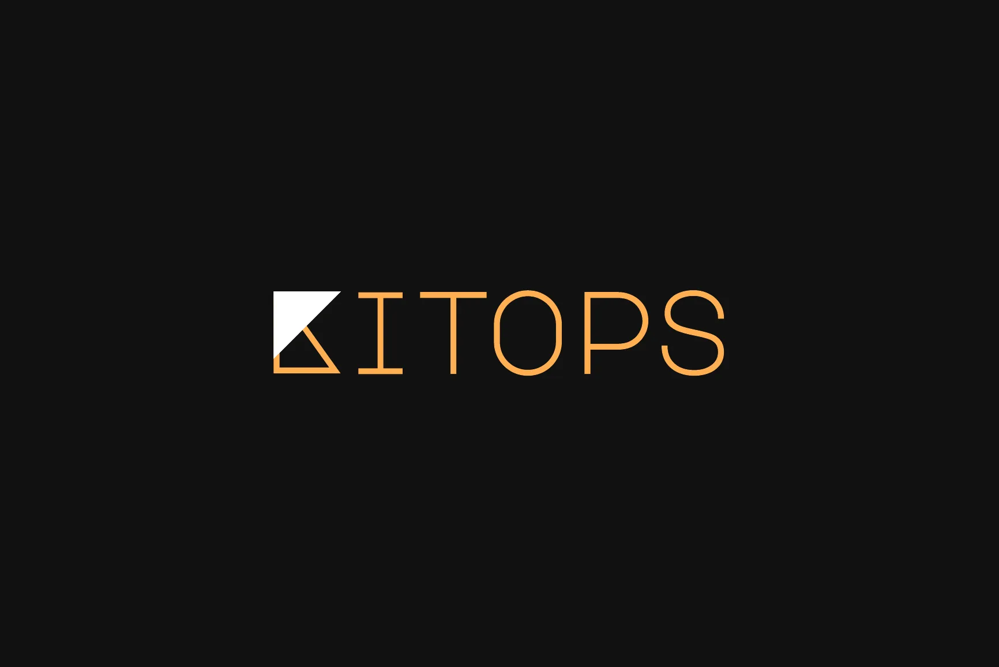
Infrastructure tooling rarely has a face
KitOps packages AI and ML projects (models, datasets, code, and configuration) into versioned, signed artifacts called ModelKits that live in the container registries teams already use. It is powerful, standards-based, and deeply technical.
That is exactly the problem for a brand. Open-source DevOps tools tend to look interchangeable: a dark site, a terminal screenshot, a generic geometric mark. KitOps needed to earn the trust of security-minded engineers while still being memorable on GitHub, at conferences, and in a crowded MLOps landscape.
There was no existing brand to evolve. Everything had to be built from zero.
How do you make a standards-based, deeply technical open-source tool feel recognizable, approachable, and impossible to forget?
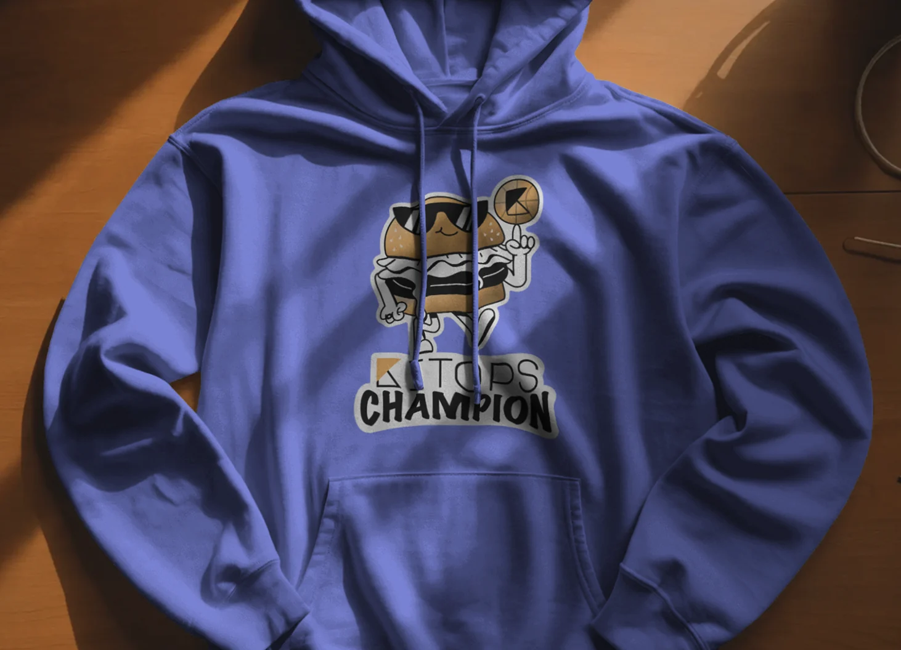
Starting with the landscape and the word "kit"
I started by mapping how the tools our audience already loves present themselves: Docker, Hugging Face, React, Vue, VitePress and other developer brands. The pattern was clear. Dark interfaces, one strong accent color, and a confident wordmark. Hugging Face was the outlier that proved a playful character can thrive in a technical space.
In parallel I built a moodboard around the name itself. What does a "kit" look like? I explored box art, model kit part sprues, developer toolsets, toolboxes, and lettering built from simple shapes, then shortlisted the directions with the most potential.


Five logo directions, each tested in context
I developed several logo directions in parallel, each with its own palette. Instead of judging marks on a blank artboard, I placed every direction on alternative backgrounds and into a full landing page concept to see how it held up as a real product presence.
Alongside the marks I ran a typeface study for the wordmark, ranging from bold display serifs and stencils to handwriting and monospace.

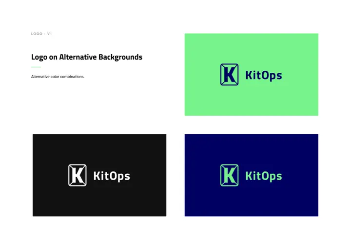
The boxed K
A K packed inside a crate outline. Clear, but it read more like a generic app icon.

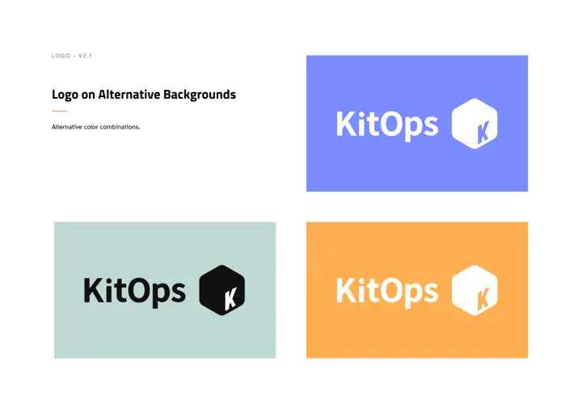
The package
A hexagon as an isometric box, introducing cornflower, gold, and ash, the colors that survived into the final palette.

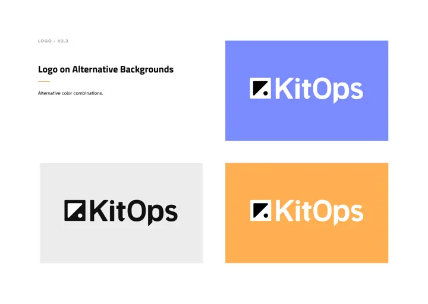
The corner
A square with a triangular cut. The first appearance of the triangle that became the final K.

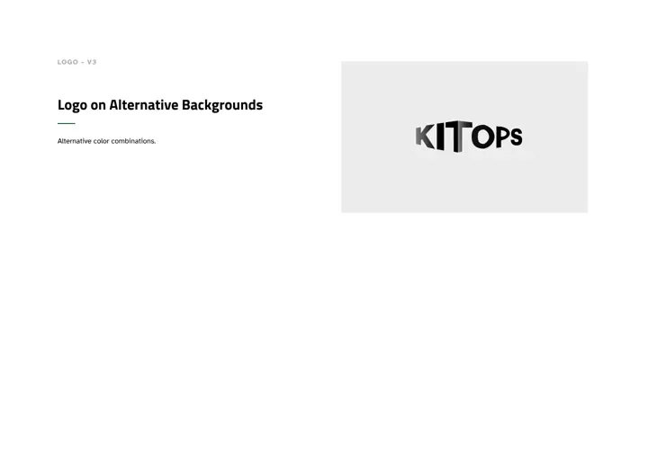
Dimensional
Extruded letters suggesting layers and depth. Expressive, but hard to reproduce at small sizes.

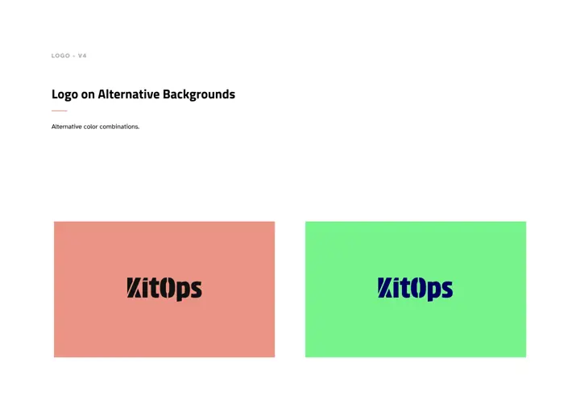
Stencil
Shipping-crate stencil lettering. Bold and memorable, but loud for a tool built on trust.

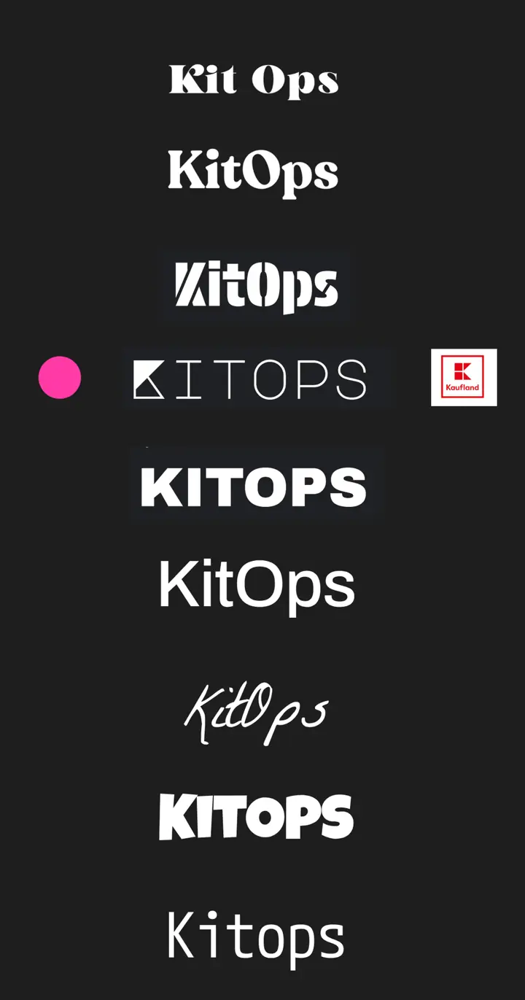
Wordmark study
The geometric monospace option (pink dot) connected the brand to the command line and won.
Every direction as a website
Each direction was carried into a landing page concept, which made it obvious how much personality each one could hold and how it would scale beyond the logo.


A wordmark that speaks fluent terminal
The final wordmark is set in uppercase geometric monospace. The K is reduced to two triangles, one solid and one outlined, which doubles as a standalone icon down to 16px for favicons and 24px for Slack bots and social avatars.
I documented it all in a brand guide: wordmark, mono-color versions, alternative backgrounds, clearspace, minimum sizes, color, and typography, so the team could produce on-brand work without a designer in the loop.
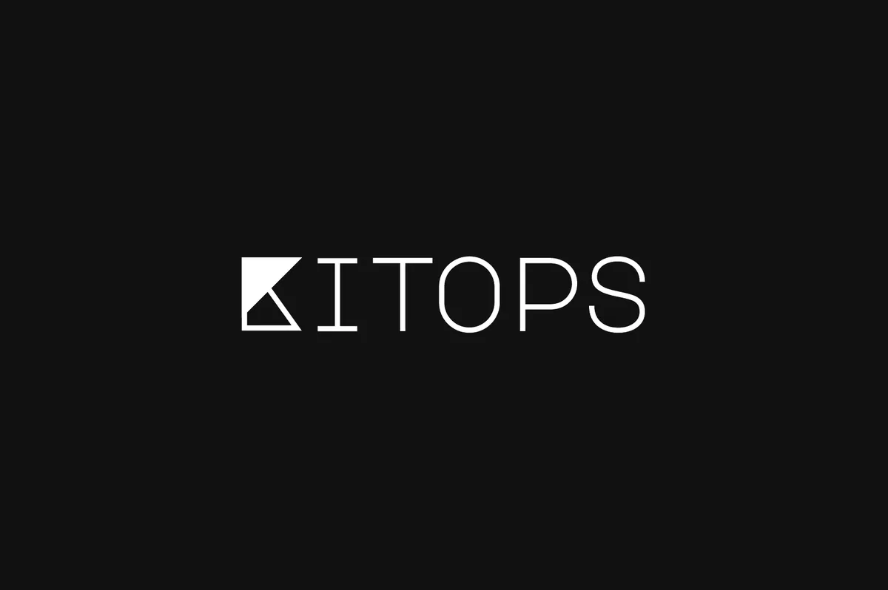
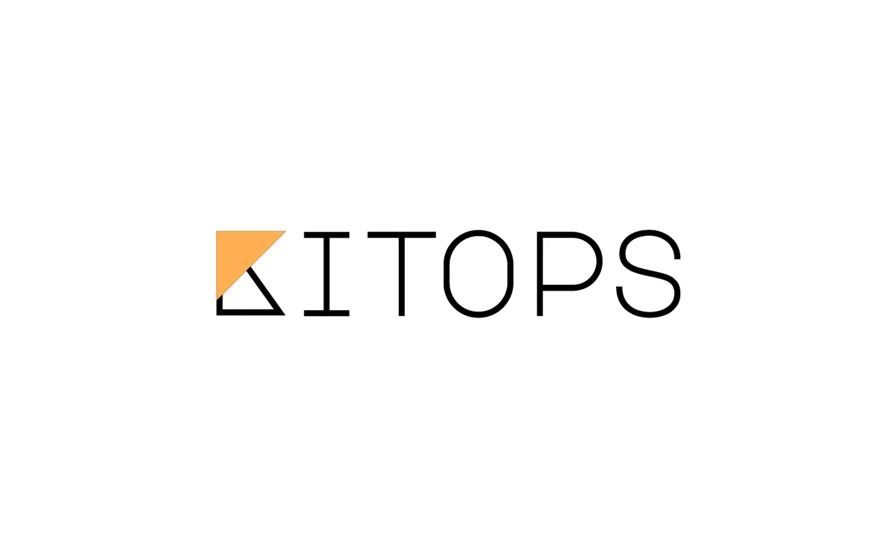
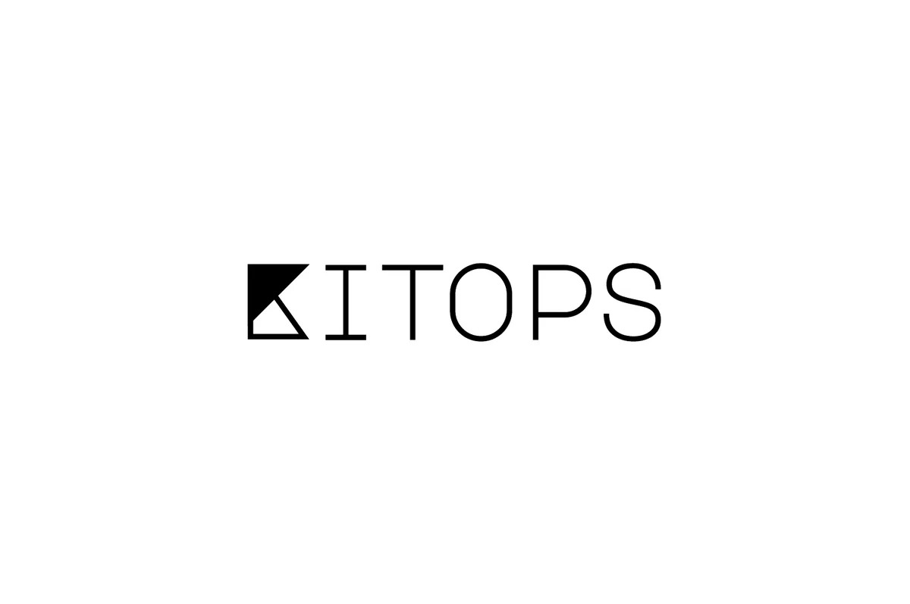
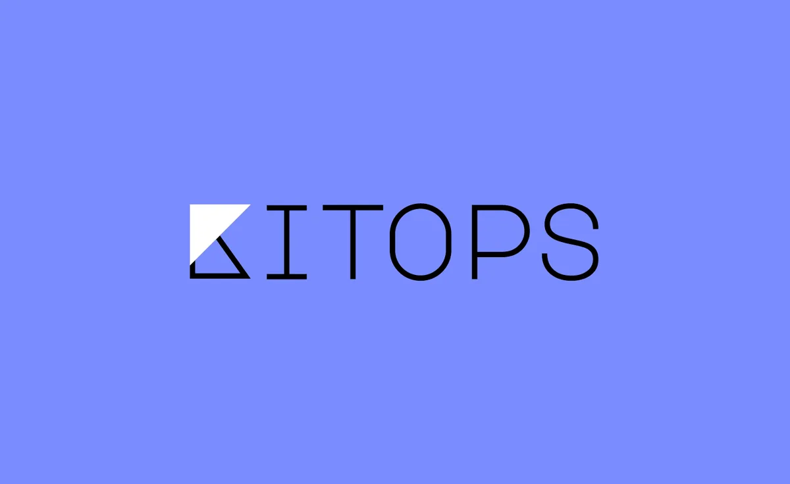
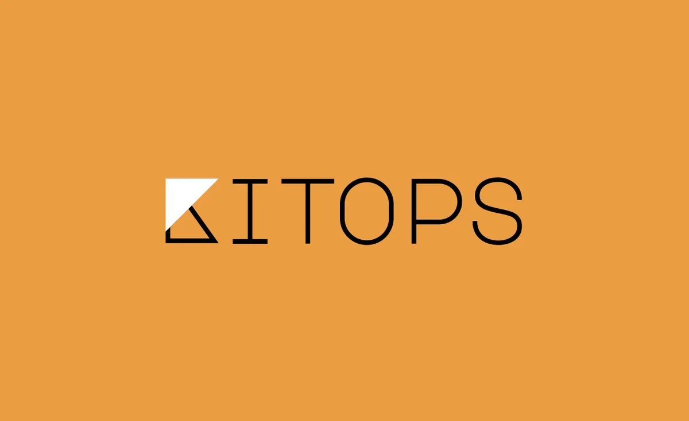

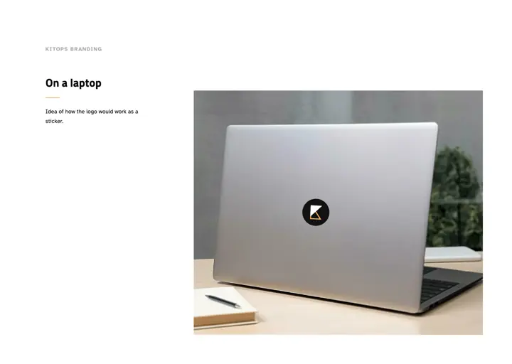

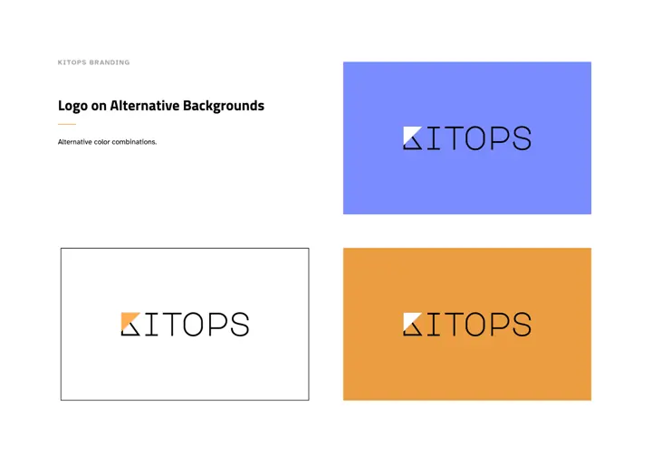

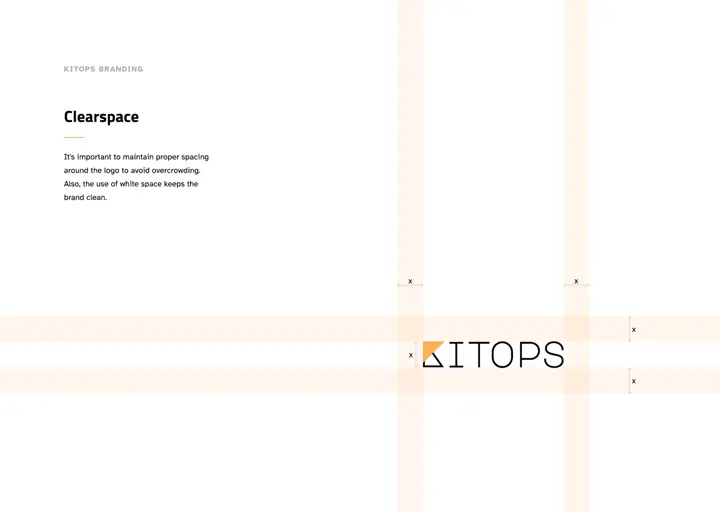

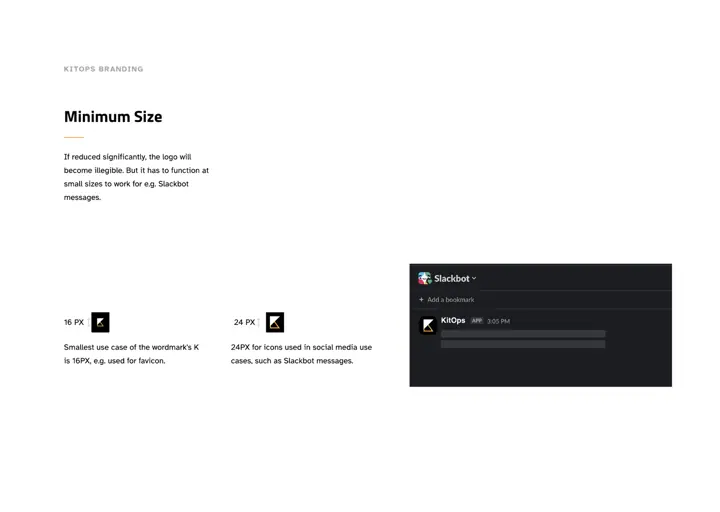
Color that carries meaning
Gold and Night lead every touchpoint. The secondary colors are not decoration: each one is assigned to a part of the product, so users learn to read the docs and website by color.
Primary
Secondary
Support: blog tags and charts
Greyscale
Three typefaces, three jobs
A characterful display face for moments of brand, a clean technical sans for structure, and a body face designed for legibility, which supports the site's WCAG 2.1 commitment.
The system at full scale: kitops.org
The landing page is where every piece of the system meets. Section titles are set in Major Mono Display, buttons and cards borrow the triangle from the K, and the color coding does real work: ModelKit content in cornflower, Kit CLI content in salmon, everything KitOps in gold.
The site went on to reach more than 2 million visitors across KitOps and Jozu.

Putting words to the personality
As the brand matured, I ran a brand personality analysis to make the implicit explicit: who KitOps is, how it speaks, and where its personality could work against it. This became the brief for everything that followed, including the mascot.
Professional and secure
The foundation of trust for teams shipping models to production.
Clear and practical
Solution-focused and straightforward, avoiding marketing speak.
Community-oriented and open
Open source, CNCF governed, and built with contributors.
Archetype: the Sage meets the Explorer
KitOps educates and brings clarity like a Sage, while pioneering new standards like an Explorer, bringing DevOps rigor to AI/ML. A touch of the Caregiver shows up in its focus on security and protection from risk.
Voice: direct, educational, confident
Explain why a problem exists, then how KitOps solves it. Back claims with standards like OCI and CNCF. Speak to whole teams, not just individual users. Visually: minimal, modular, and diagrammatic. Icons over stock photos.
"KitOps is the calm expert in the room, turning chaotic ML workflows into secure, reproducible systems."
If KitOps were a person, it would be the senior platform engineer who shows up early with diagrams and strong coffee, has the slightly dry humor of someone who has fixed a hundred pipelines before lunch, and ends every talk with "You can version that too, you know."
The tension worth designing for
The analysis surfaced the trade-off: the technical seriousness that builds trust can feel intimidating to less technical users and small teams. The brand needed a release valve. That became the mascot.
Meet Kernel Krunch
Kernel Krunch is a burger. It sounds like a joke, and that is part of the point, but the metaphor holds up surprisingly well for a product about packaging layers.
The original Kernel Krunch is color-coded in the KitOps palette and wears sunglasses because it lives in dark mode and daylight hurts its eyes.


Kernel Krunch levels up: KitOps Champions
KitOps Champions is the community program for the MLOps, DevOps, and AI engineers who build, speak, and create content for KitOps. It needed an identity that felt like an honor to wear, so Kernel Krunch got an upgrade.
I started from character inspiration and explored many variations, from flat to 3D, before sketching the Champion pose by hand: a burger spinning a basketball with the KitOps K on it.

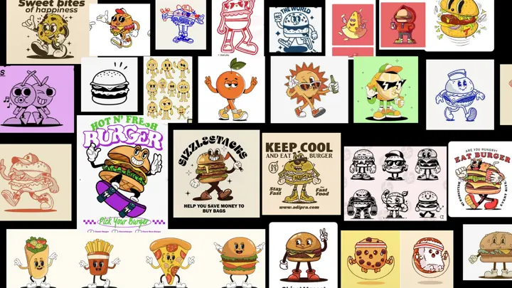

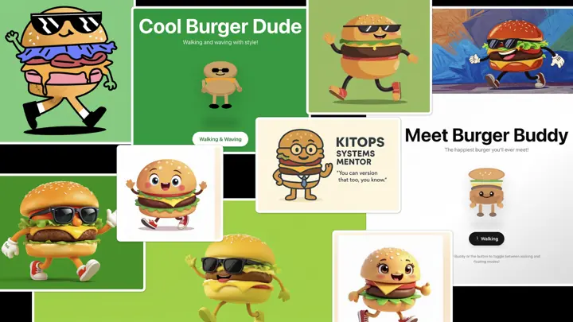

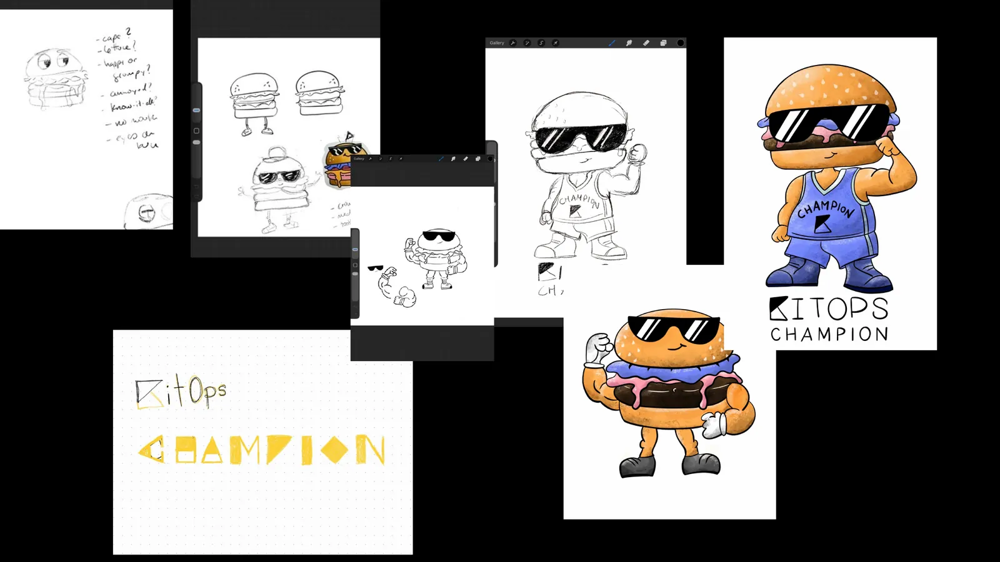

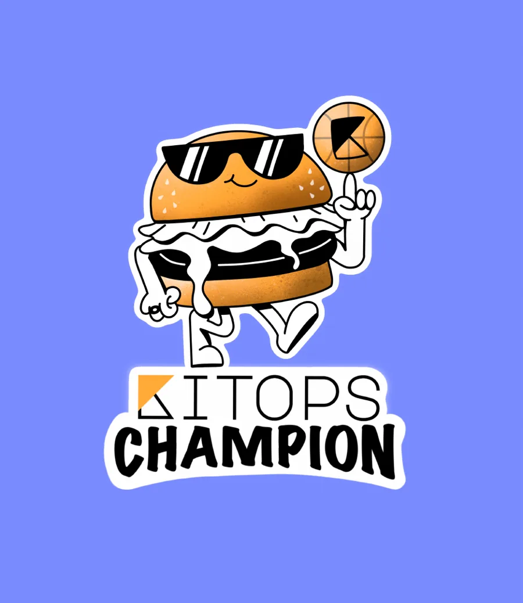
What changed for the Champion
- Reduced colors, so it reads as a brand mascot rather than a fast food chain.
- Smoothed lines for a cleaner, more professional finish.
- Champion elements: the KITOPS CHAMPION lettering, a champion ring, and a ball carrying the KitOps logo.

A brand that grew with the project
visitors to the KitOps and Jozu marketing sites
KitOps downloads
GitHub Stars
KitOps became a Cloud Native Computing Foundation project
See all the work
Every exploration, guide page, and mascot sketch in one place.